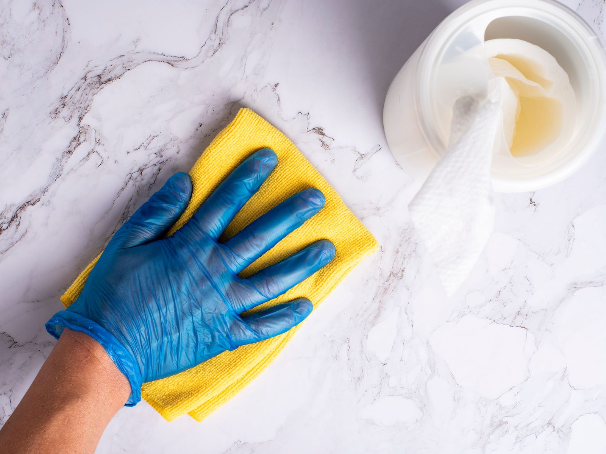

Muratpaşa’nın tüm mahallelerine geliyoruz
Lara aksı, Kaleiçi tarafı ve merkez mahallelerde ev, ofis ve apartman ortak alanı.
Bu ilçede iş nasıl yürür

Şirinyalı, Güzeloba, Fener, Meltem, Yeşilbahçe ve Meydankavağı’nda daire ve ofis temizliği sık istenir. Büro için ekip, kapı müşteriye açıkken girmez. Saat çoğu zaman 18.00’den sonra veya sabah açılıştan öncedir.
Balbey, Haşimişcan ve Kaleiçi çevresindeki binalarda merdiven dardır; ekip bu adreslere de çıkar. Ortak alan işinde kat sayısı ve asansör olup olmadığını yazın. Daire içi ile merdiven temizliği ayrı iştir, aynı güne konabilir.
Kapsam hizmetler sayfasındadır. Diğer ilçeler: Konyaaltı ve Kepez.
 Muratpaşa mahalleleri
Muratpaşa mahalleleri
Liste, Muratpaşa Kaymakamlığı’nın 55 mahalle kaydına göredir.
55 mahalle listeleniyor.
- Altındağ
- Bahçelievler
- Balbey
- Barbaros
- Bayındır
- Cumhuriyet
- Çağlayan
- Çaybaşı
- Demircikara
- Deniz
- Doğuyaka
- Dutlubahçe
- Elmalı
- Ermenek
- Etiler
- Fener
- Gebizli
- Gençlik
- Güvenlik
- Güzelbağ
- Güzeloba
- Güzeloluk
- Haşimişcan
- Kılıçaslan
- Kırcami
- Kışla
- Kızılarık
- Kızılsaray
- Kızıltoprak
- Konuksever
- Mehmetçik
- Meltem
- Memurevleri
- Meydankavağı
- Muratpaşa
- Sedir
- Selçuk
- Sinan
- Soğuksu
- Şirinyalı
- Tahılpazarı
- Tarım
- Topçular
- Tuzcular
- Üçgen
- Varlık
- Yenigöl
- Yenigün
- Yeşilbahçe
- Yeşildere
- Yeşilova
- Yıldız
- Yüksekalan
- Zerdalilik
- Zümrütova
Muratpaşa soruları
Akşam ofis temizliği var mı?
Var. Şirinyalı, Güzeloba, Fener ve Meltem’deki bürolar için ekip genelde 18.00’den sonra veya sabah açılıştan önce gelir. Saat WhatsApp’ta birlikte kararlaştırılır.
Dar merdivenli eski apartmanlara çıkıyor musunuz?
Evet. Balbey, Haşimişcan ve Kaleiçi çevresindeki binalar da Muratpaşa listesindedir. Kat sayısı ve asansör bilgisi süreyi belirler.